2026년 3월~8월 6대 조사 시계열 공기미생물 농도 & 미기후 다축 변화 추이
에어샘플러 0.1 ㎥ 기준 환산 농도(좌측 축, CFU/㎥ = Count / 0.1)와 현장 대기온도(우측 축, ℃) 및 상대습도(우측 축, %)의 동조 추세.
4월 15일: 강한 봄철 이상 고온(23.5℃)과 돌풍(불정 AWS 풍속 7.6 m/s, 순간최대 16.3 m/s)으로 수목 엽면의 사상균 및 토양 세균이 대량 물리적으로 탈락·비산하여 부유 세균(TAB)이 연중 최고치(316.4 CFU/㎥)를 기록하였습니다. (1차 NGS 메타게놈 분석 시점)
4월 29일: 기온이 16.1℃(7.4℃ 급락)로 안정화되고 풍속(4.1 m/s)이 잦아들었으나, 개엽기 진균 농도(TAF 789.0 CFU/㎥)는 높은 상태를 유지하였습니다. 두 날짜는 외견상 평균 진균 농도가 유사하게 측정되었으나 지점별 미기후 분포와 풍속 교란 특성에서 명확한 차이를 나타냅니다.
10개 조사지점 인터랙티브 항목별·일자별 비교 탐색기
조사 일자 버튼과 관측 항목 버튼을 클릭하면 10개 지점의 수치가 실시간으로 갱신되며 그래프와 핵심 진단 통계가 연동됩니다.
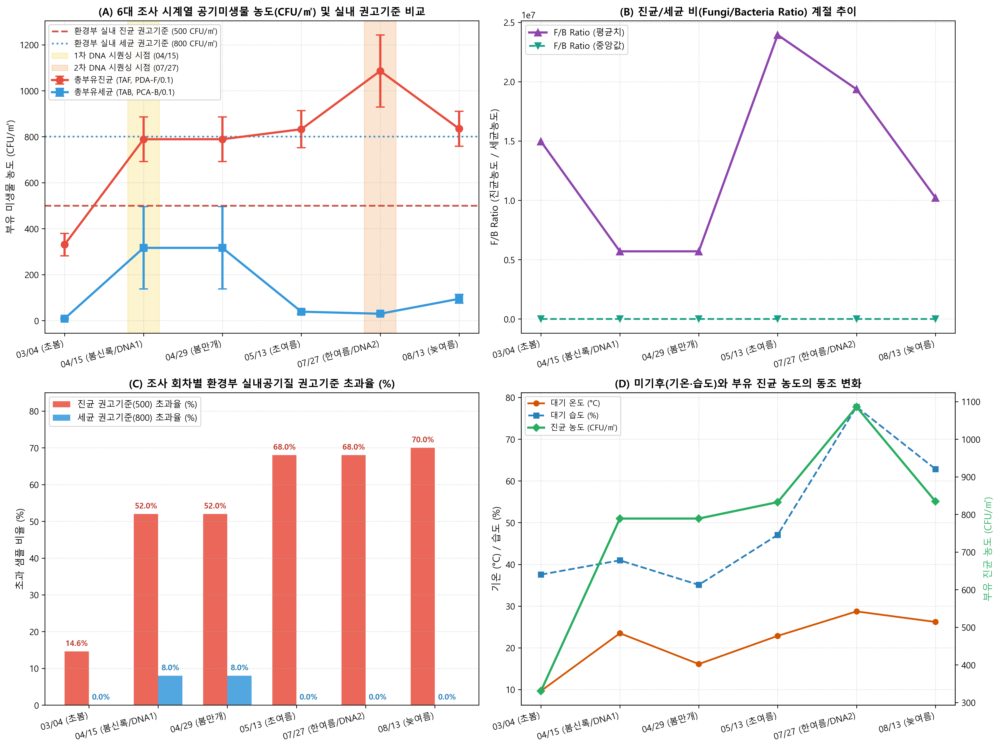
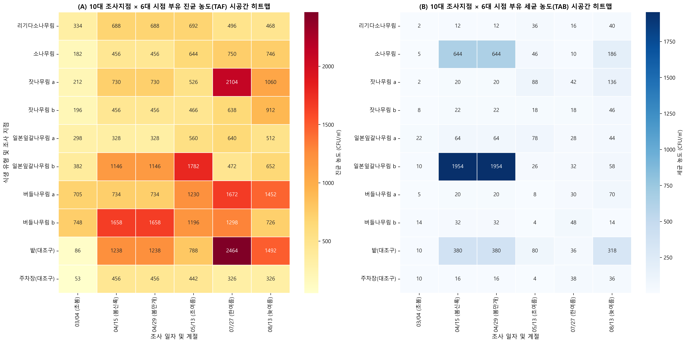
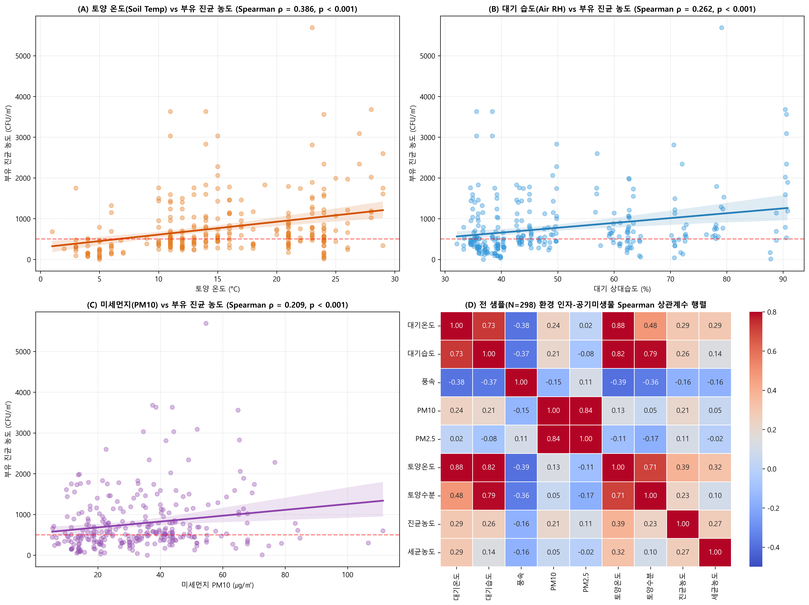
10대 고정 조사지점별 미생물 현황·특성·심층 생태백과
건국대 학술림 10개 고정 조사구별 **배양 집락 정량 현황(CFU/㎥)**, **ITS 메타게놈 차세대 염기서열분석(NGS) 실측 우점 종 구조(%)**, **고유 미생물 특성**, 그리고 **수목-미생물 공생, 유기물 탄소 순환, 생태계 지표성 및 산림치유 보건 가이드**를 체계적으로 정리한 정밀 생태 진단서입니다.
리기다소나무림
Pinus rigida Mill.
잣나무림 a
Pinus koraiensis Siebold & Zucc. (Stand A)
버들나무림 a (왕버들 a)
Salix koreensis Andersson (Stand A)
밭 (개활 경작지 대조구)
Agricultural Cultivated Field (Control)
주차장 (인공 포장 대조구)
Paved Parking Lot Control
소나무림
Pinus densiflora Siebold & Zucc.
일본잎갈나무림 a (낙엽송 a)
Larix kaempferi (Stand A)
버들나무림 b (왕버들 b)
Salix koreensis (Stand B)
일본잎갈나무림 b (낙엽송 b)
Larix kaempferi (Stand B)
잣나무림 b
Pinus koraiensis (Stand B)
공기진균 ITS 메타게놈 차세대 염기서열분석(NGS) 계절 천이
1차 봄철(63,167 reads/sample) 대비 2차 여름철(97,331 reads/sample)의 분류군 상대 풍부도 구조 및 다양성 지수 변화.
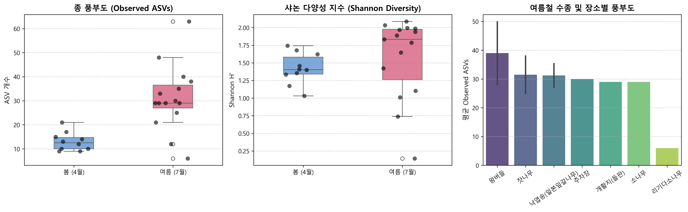
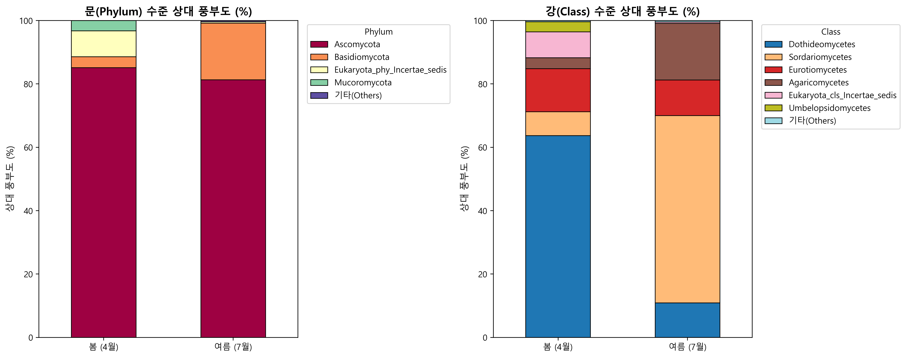
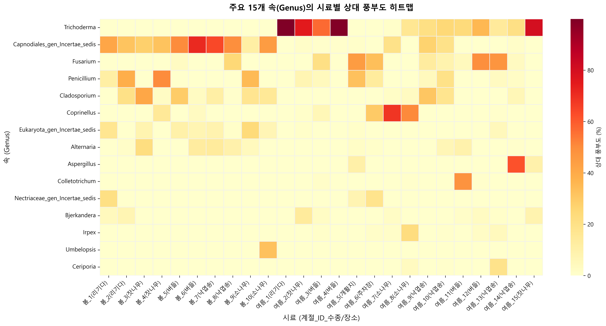
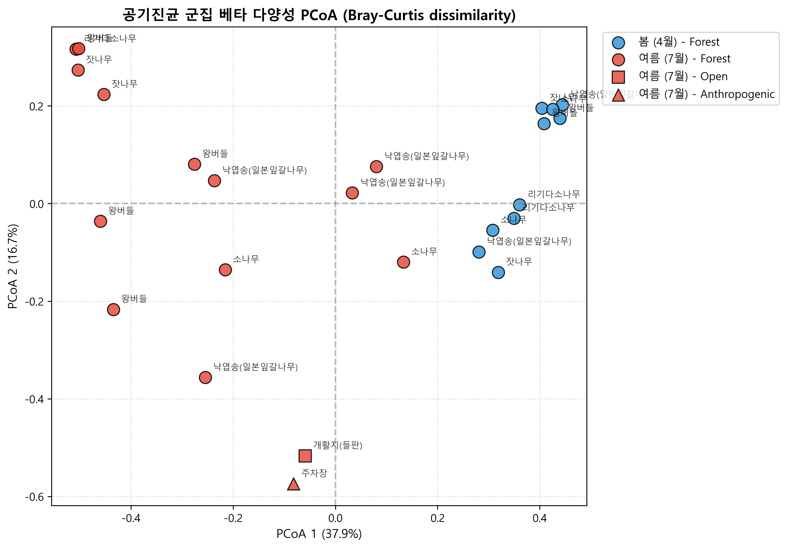
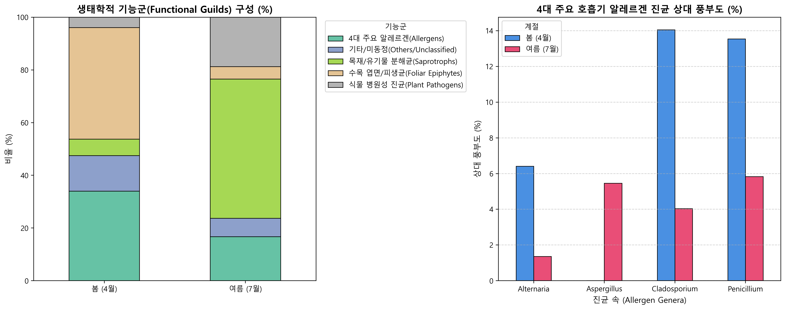
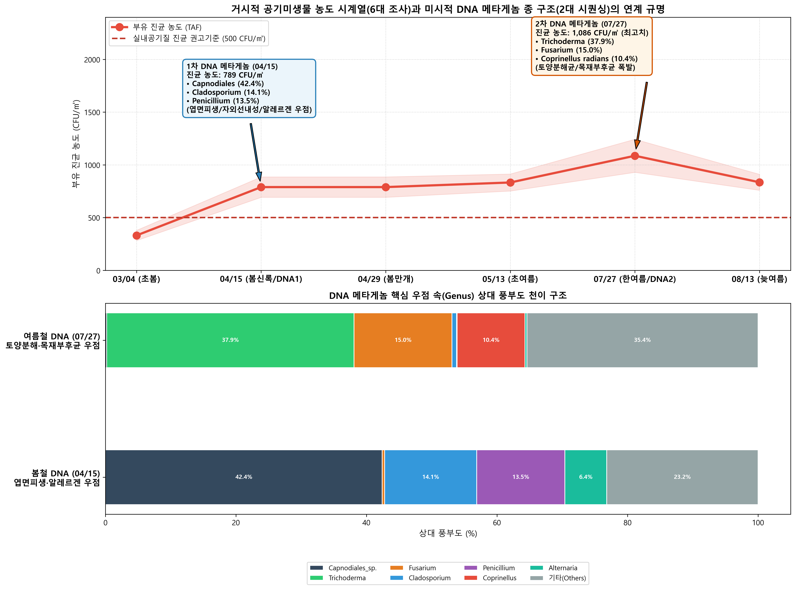
공기미생물 공기생 상호작용 네트워크 (Co-occurrence Network)
SparCC 및 비모수 스피어만 상관 분석(|r| ≥ 0.6, p < 0.05) 기반 공기 부유 진균 분류군 간의 생태적 공존 및 길항 네트워크 구조.
99 ASVs
네트워크 구성 유의 분류군350 Edges
양의 상관(공존) 93.7%6.3%
계절 분리 및 항균 길항Fig 6. 공기생 상호작용 네트워크 토폴로지 (클릭 확대)
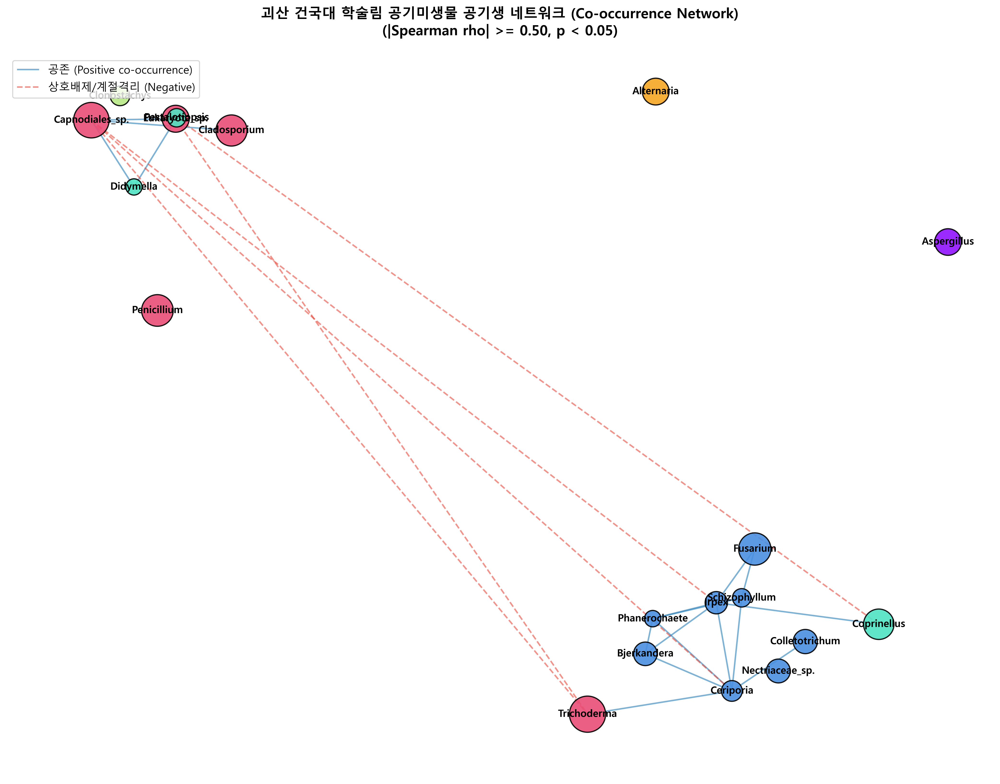
Fig 7. 미기후-미생물 상관 히트맵 (클릭 확대)
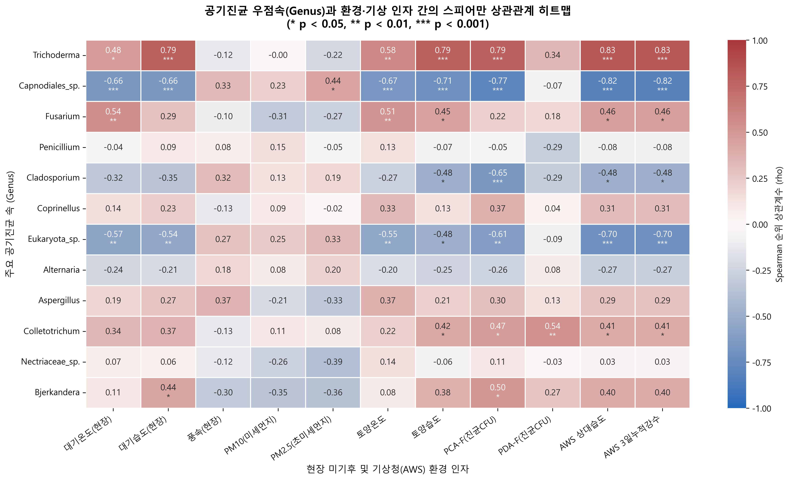
국내외 환경 기준 비교 & 산림치유 방문객 안전 가이드
환경부 실내공기질 관리법 권고기준(부유세균 800 CFU/㎥, 부유진균 500 CFU/㎥) 및 WHO 가이드라인과 학술림 측정 농도 대조.
| 구분 | 환경부 실내공기질 권고기준 | 학술림 봄철 평균 (04/15) | 학술림 여름철 평균 (07/27) | 생태·보건학적 안전성 평가 |
|---|---|---|---|---|
| 총부유세균 (TAB) | 800 CFU/㎥ 이하 (어린이집/의료기관) | 316.4 CFU/㎥ (강풍 비산) | 29.8 CFU/㎥ (극청정) | 기준치의 3.7% 수준으로 밀폐 실내 대비 병원성 세균 오염 전무한 극청정 상태 유지. |
| 총부유진균 (TAF) | 500 CFU/㎥ 이하 (다중이용시설) | 789.0 CFU/㎥ (자연 비산) | 1,086.0 CFU/㎥ (토양 폭발) | 자연 산림 고유의 유기물 분해 활성(Trichoderma 등 무해 유익균)에 의한 현상으로 실내 곰팡이 오염과는 본질이 다름. |
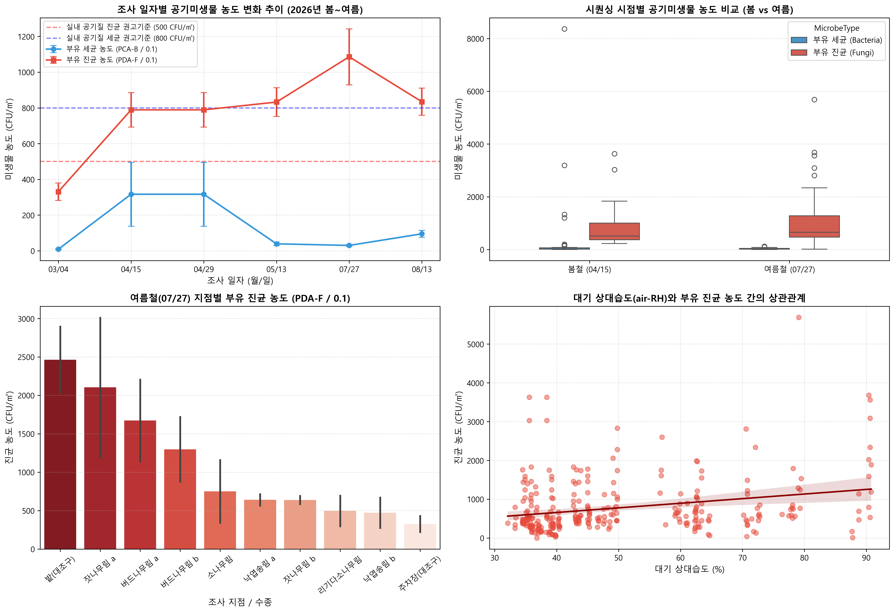
최적의 산림치유 추천 구역
Site 7 (일본잎갈나무림 a, 444 CFU/㎥) 및 Site 10 (능선 잣나무림 b, 520 CFU/㎥): 통풍과 광선 투과가 양호하여 곰팡이 포자 정체가 없고 솔잎 테르펜(Terpene) 피톤치드가 풍부하여 호흡기 치유 및 산림욕에 최적입니다.방문 시 주의 및 권고 사항
Site 3/8 (수변 버들나무림) 및 Site 2 (계곡부 잣나무림 a): 7~8월 장마 다습기에는 진균 농도가 1,600~2,100 CFU/㎥까지 상승하므로, 중증 아토피·천식 환자는 다우 직후 체류를 자제하거나 마스크 착용을 권장합니다.학술림 핵심 우점 종별 생태백과 (10대 우점균 라이브러리)
건국대 학술림 공기생태계에서 확인된 핵심 10대 우점 진균의 생태적 지위, 인체 병원성, 생태계 지표성(Bioindicator) 비교 분석.
Trichoderma hamatum / harzianum
여름 37.9% (1위)🌱 생태적 의의 & 역할: 산림 낙엽층 셀룰로오스 초고속 분해, 토양 병원균에 대한 길항/중복기생(Biocontrol) 및 수목 면역 활성화.
⚠️ 인체 병원성 & 의학적 영향: 일반인에게 완전 무해한 토양 유익균. 면역저하자 기회감염 극히 드묾, 고농도 흡입 시 과민성 폐장염 주의.
🎯 생태계 지표성 (Bioindicator): 원형 자연 산림 식생 건전성 지표 (개활지/주차장 0% 소멸, 산림 캐노피 내부에서만 40~50% 점유).
Capnodiales_sp.
봄철 42.4% (1위)🌱 생태적 의의 & 역할: 수목 엽면(Phyllosphere) 피생균, 두꺼운 멜라닌 세포벽으로 강한 자외선(UV) 및 건조 스트레스 극복.
⚠️ 인체 병원성 & 의학적 영향: 인체 비병원성. 고농도 비산 시 결막 기계적 자극 가능.
🎯 생태계 지표성 (Bioindicator): 봄철 수관 노출 및 건조기 지표종 (여름 장마 비세척 시 0.2%로 급감).
Fusarium oxysporum
여름 15.0% (2위)🌱 생태적 의의 & 역할: 토양 서식 사상균, 유기물 분해 및 수목·농작물 도관 시들음병(Wilt) 유발, 밭(45.1%)·주차장(33.4%) 우점.
⚠️ 인체 병원성 & 의학적 영향: 곰팡이독소(Fumonisin, T-2) 생성. 각막염 및 면역저하자 파종성 후사리움증 주의.
🎯 생태계 지표성 (Bioindicator): 개활지 및 주차장 등 지표면 교란 및 비산 먼지 지표종.
Coprinellus radians
소나무림 59.4%🌱 생태적 의의 & 역할: 담자균류 목재 백색부후균, 침엽수 고사목 리그닌 및 부식 유기물 초고속 분해.
⚠️ 인체 병원성 & 의학적 영향: 미세 담자포자(2~4㎛)가 폐포 깊숙이 도달하여 담자포자 알레르기(Basidiospore allergy) 유발 가능.
🎯 생태계 지표성 (Bioindicator): 소나무림 고사목 축적 및 강우 후 버섯 자실체 발생 지표종.
Cladosporium (C. cladosporioides)
봄철 14.1%🌱 생태적 의의 & 역할: 식물 엽면 부생 및 쇠약 식물 병원균, 전 세계 공기 중 최고 빈도 검출 진균.
⚠️ 인체 병원성 & 의학적 영향: 알레르기 비염, 결막염 및 소아 천식 유발 1등급 원인 진균 (Cla h 알레르겐).
🎯 생태계 지표성 (Bioindicator): 온대 활엽수/침엽수 혼효림의 계절적 신엽 개엽 및 광역 공기 이동 지표.
Penicillium (P. mallochii)
잣나무림 50.1%🌱 생태적 의의 & 역할: 침엽수 낙엽 토양 서식, 항균 펩타이드 생성 및 유기인 용해 작용.
⚠️ 인체 병원성 & 의학적 영향: 기회감염성 진균. Pen c 13 알레르겐 분비로 실내외 천식 반응 촉진 가능.
🎯 생태계 지표성 (Bioindicator): 침엽수림 산성 부식토(Mor hummus) 층 형성 및 토양 미기후 안정성 지표.
Alternaria alternata
봄철 6.4%🌱 생태적 의의 & 역할: 식물 잎마름병균 및 유기물 분해균, 대기 중 비산 포자 크기가 커(20~40㎛) 상기도에 주로 침착.
⚠️ 인체 병원성 & 의학적 영향: 강력한 Alt a 1 알레르겐 단백질 보유, 중증 천식 발작의 주원인균.
🎯 생태계 지표성 (Bioindicator): 봄철 농경지 및 수변 식생 엽면 노화 지표.
Aspergillus (A. tubingensis)
밭 10.4%🌱 생태적 의의 & 역할: 내열성 사상균, 탄닌 및 리그닌 분해 효소 다량 분비, 건조 토양 우점.
⚠️ 인체 병원성 & 의학적 영향: 아스페르길루스증(Aspergillosis) 및 오크라톡신(Ochratoxin A) 독소 생성 잠재력.
🎯 생태계 지표성 (Bioindicator): 토양 열 스트레스 및 건조 경작지 지표종.
Bjerkandera adusta (흰구름버섯)
잣나무림 13.7%🌱 생태적 의의 & 역할: 담자균문 백색부후균, 리그닌 페록시다아제(LiP) 분비로 난분해성 목재 리그닌을 완전 무기화.
⚠️ 인체 병원성 & 의학적 영향: 버섯 포자 흡입 시 외인성 알레르기성 폐포염 유발 가능.
🎯 생태계 지표성 (Bioindicator): 온대 침엽수림 고사목의 자연적 부후 및 탄소 격리-환원 순환 지표.
Irpex laceratus (침버섯류)
소나무림 11.8%🌱 생태적 의의 & 역할: 침엽수 고사목에 발생하는 백색부후균으로 고분자 셀룰로오스/헤미셀룰로오스 분해.
⚠️ 인체 병원성 & 의학적 영향: 비병원성 환경 버섯 진균.
🎯 생태계 지표성 (Bioindicator): 자연림 생태계 고사목 부후 프로세스 정상 가동 지표.
학술림 공기미생물 연구 핵심 시각화 그래픽 (12 Figures 전수 수록)
각 카드를 클릭하시면 원본 고해상도 그래픽과 상세 해설 캡션을 라이트박스 뷰어로 확인하실 수 있습니다.
종 풍부도 2.4배 급증 (p=1.41e-4), Shannon 지수 계절 차이
자낭균문(봄 97%) vs 담자균문(여름 63%) 극적 교체
10개 조사구별 고유 미생물 지문 및 군집 분리
PERMANOVA R²=0.457 (p=0.001) 계절 군집 유의 분리
부생균, 병원균, 4대 천식 원인균 계절 대조
99 노드, 350 엣지, 공존 93.7%, 매개중심성 허브 종
기온·습도·토양온도와 미생물 분류군 간의 유의 상관
CFU/㎥ 정량 환산 및 환경부 실내공기질 권고기준 비교
봄철 강풍 비산 및 한여름 TAF 급상승 동조 추세
일자별·임분별 미생물 농도 시공간 동태
토양온도(0.386) 및 상대습도(0.370) 최고 상관 구명
배양 농도 정량치와 차세대 메타게놈의 완벽 연계